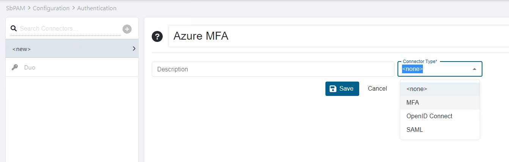
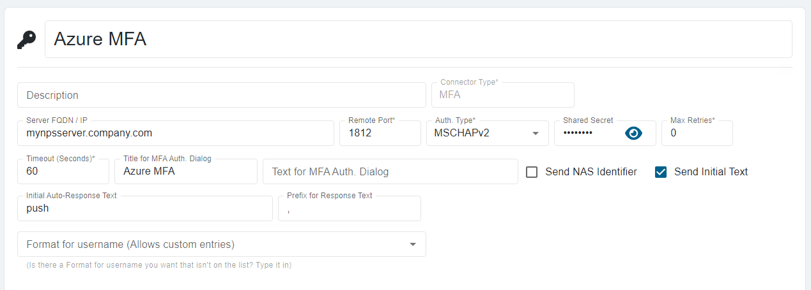

Overview
Netwrix Privilege Secure (NPS) supports the configuration of Authentication Connectors for any RADIUS server.
NOTE: In this article, the screenshots will illustrate how to configure an Authentication Connector for Azure MFA, but the same process generally applies.
Before You Begin
Ensure that you have a RADIUS server installed and configured in your environment. For Azure MFA, refer to the relevant documentation on configuring the NPS extension. In general, refer to the appropriate product-specific documentation for your RADIUS server.
Instructions
-
In NPS, navigate to Configuration > Authentication. Select the green plus sign to create a new Authentication Connector.
-
Provide a name for the Connector and select the MFA Connector Type.
 -
Click Save, and then configure the connector with the appropriate values for your RADIUS server.
 -
Open the appsettings.json file. On a default installation, it will be located in the following path:
C:\ProgramData\Stealthbits\PAM\WebService\appsettings.json -
Add the following line before the closing }.
"StrictExternalAuth": "False"NOTE: If there are other properties before the closing }, ensure that they are all separated by a single comma.
-
You may now assign the new RADIUS authentication connector to users and groups in SbPAM.